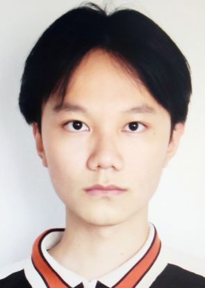

Ziang Ren
|  | Phone: +82 18280123343 |
About me
In 2022, I will receive the B.S. degrees in Electronic Information Engineering from Nanjing University of Posts and Telecommunications (NJUPT) under the supervision of
Prof. Qin Wang. During my time as an undergraduate, I am honored to be a member of Quantum Information Processing Laboratory, Nanjing University of Posts and Telecommunications.
We live in a world where an increasing number of objects are attached to a variety of sensors, and I am looking forward to developed a secure, efficient and robust communication network that connects these devices to improve people's situational awareness–at home, in the streets, in a car. Two keys are vital to achieve this goal: 1. maintaining high rate of transmission while avoiding eavesdropper and/or interference, 2. developing a maintainable, organizational, and user-friendly software that even the non-developers can be benefited. and that's why I am passionate in learning and implementing every methods (i.e. supervised learning, quantum cryptography and software engineering) that align with such interests.
 |
Oh that's me with UR5 robotic arm and RH56DFX smart hand, we were trying to calibrate the frame of reference.
Research
My research interests include
Algorithms and optimization
Machine learning
Software engineering
Wireless communications
Quantumn information
Sensing and Imaging
Recent Publications
Zi-Ang Ren, Yi-Peng Chen, Jing-Yang Liu, Hua-Jian Ding, and Qin Wang. (2021) "Implementation of Machine Learning in Quantum Key Distribution". IEEE Communications Letters, ISSN 1089-7798 DOI: https://ieeexplore.ieee.org/document/9268987?source=authoralert
Submission in progress
Zi-Ang Ren , Jia-Xin Xu , Yi-Peng Chen , Chun-Hui Zhang , and Qin Wang, "Optimal resource allocation of quantum digital signatures with machine learning"
Projects
High-Performance Quantum Key Distribution System, as team leader
Achieving real-time recommendation of optimal quantum key distribution (QKD) protocol for different user environments (i.e., communication distance ranging from 0 Km to 600 Km)
Optimal Parameters Configuration in Quantum Digital Signature, as team leader
Predicting the optimal parameters concerning the intensity of different quantum states and probability of incorporating these states into different measurement bases with supervised learning.
Deep-learning-based Landslide Monitoring Using Close-Shot Photogrammetry, as team member
A Landslide Monitoring system utilizing RNN which can classify the severity of landslide in different slope images
Intelligent Tactility-assisted 3D Imaging System with Single-photon Radar, as team leader
Reconstructing the 3D shape for objects using a creative multi-modal and neural-network-combined imaging method under the situation where light source is limited.
Skills
C, C++, Java, MATLAB, Python, VHDL, Access, Android Studio, css, html